A 7-day journey into Computer-Aided Design — starting with basic 2D sketching commands, moving through 3D extrusion and assembly design, modeling standard mechanical parts like nuts and bolts, designing gears and understanding mechanical motion, and finishing with a complete AutoCAD button design project. Click on any day to view notes, topics covered, and screenshots.
Day 1 introduced the basics of sketching in a CAD environment — the foundation every 3D model is built on. We learned the core drawing commands and a few essential selection and editing shortcuts.
X to toggle it to a construction line.Practice: Sketch a simple shape from the top view using the Line, Rectangle, and Circle tools, then practice selecting a closed loop with a double-click and converting a line to a construction line using the X shortcut.
Day 2 built on the sketching basics — practicing the same core commands (Line, Rectangle, Circle and their sub-types) while going deeper into selection techniques and construction geometry.
X.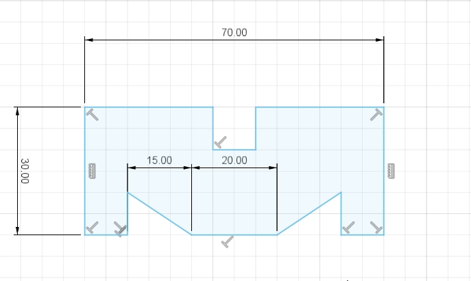
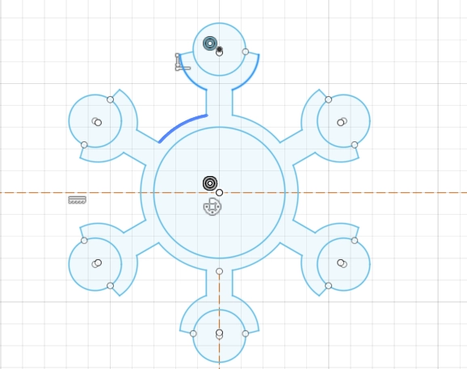
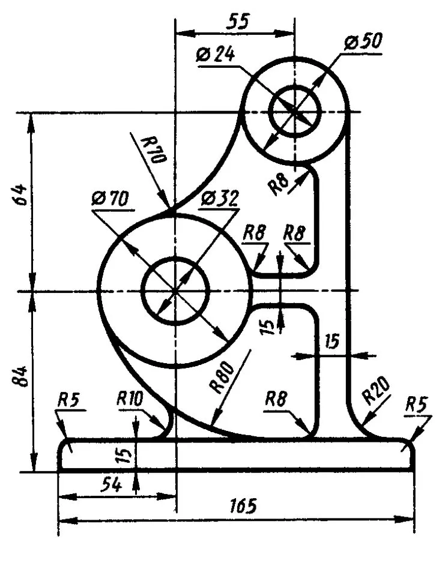
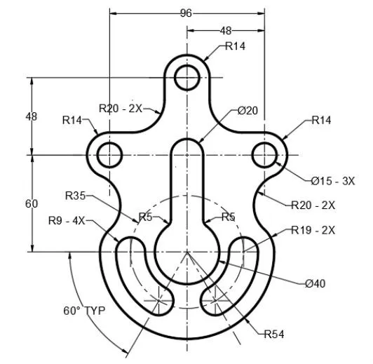
Practice: Create a closed sketch, select the full loop using a double-click, and convert at least one line into a construction line.
Day 3 moved from 2D sketches into 3D — using the Extrude command to turn flat profiles into solid bodies, and learning the different design approaches used in CAD software.
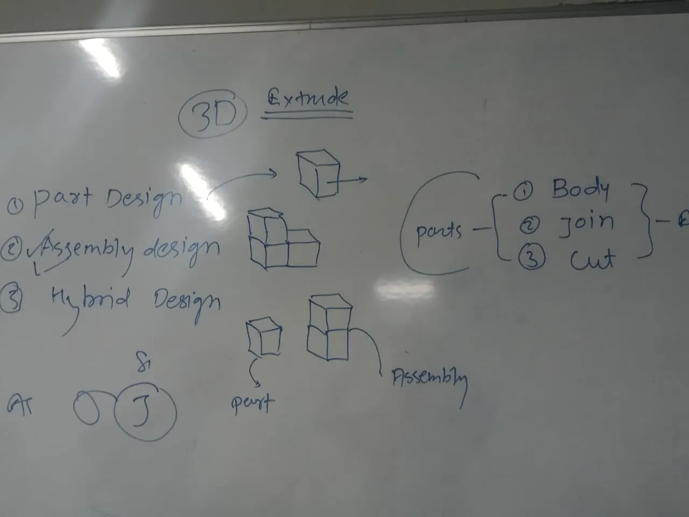
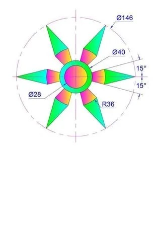
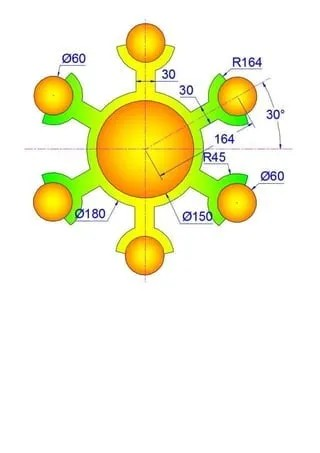
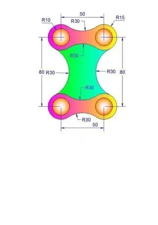
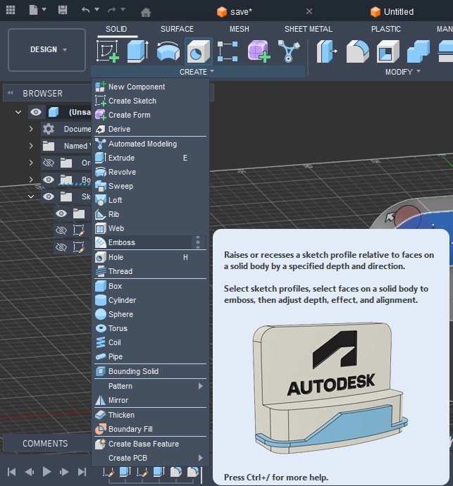
Practice: Sketch a 2D profile, extrude it into a solid body, and practice navigating the 3D workspace using the Pan and Orbit shortcuts.
Day 4 introduced basic mechanical parts by modeling two of the most common fasteners — a nut and a bolt — and discussing how they differ in form and function.
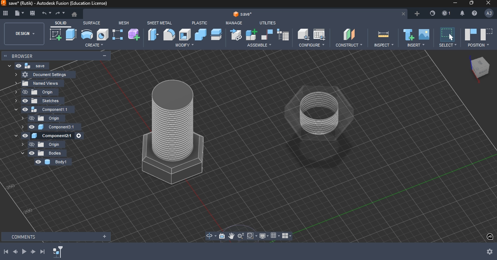
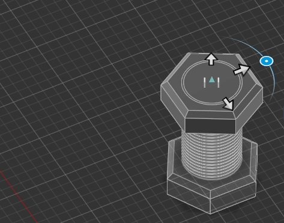
Practice: Model a hex-head bolt with a threaded shaft and a matching hex nut with internal threads, then position them together as an assembly.
Day 5 covered gear design — one of the most fundamental mechanical components used to transmit motion and power.
Practice: Design a gear with evenly arranged teeth, then use rotation tools to simulate how it meshes and interacts with a second gear.
Day 6 focused on precision drafting — designing a button entirely in AutoCAD using fundamental 2D drawing and editing tools.
Practice: Draft a button design in AutoCAD using 2D geometric shapes, applying precise dimensions, and refining the shape through editing tools.
Day 7 wrapped up the button project from Day 6 and introduced two new areas of the CAD workspace: Appearance and Construction.
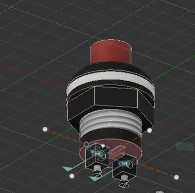
Practice: Finish the button project, then apply an appearance/material to the finished model and explore the Construction tools.